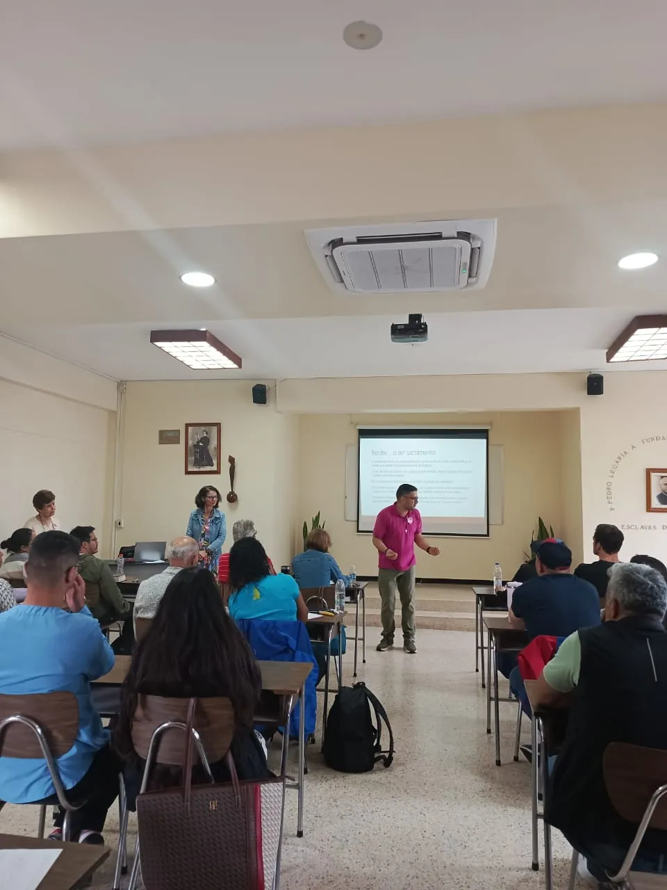
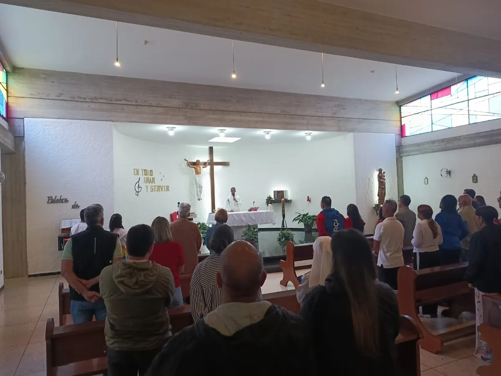
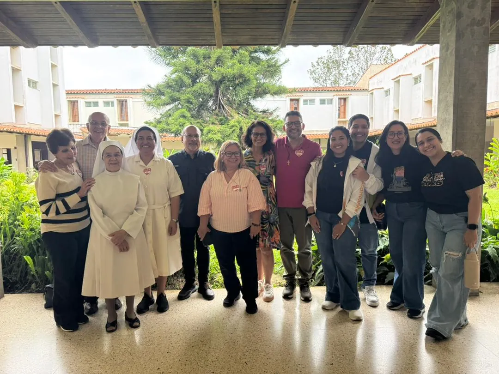

RealizadoRealizadoRetiro · Familia
Retiro de Parejas «Un Encuentro de amor en Cristo Rey»
Retiro de un día para parejas, con espiritualidad ignaciana, el sábado 23 de mayo en El Hatillo, con un equipo del Área de Familia y Vida y de la Pastoral Familiar de la Arquidiócesis de Caracas.

Datos del evento
- Fecha
- Sábado 23 de mayo de 2026
- Modalidad y lugar
- Presencial · Casa de Retiro de las Esclavas de Cristo Rey, El Hatillo
- Organiza
- Área de Familia y Vida del Centro de Laicos, Familia y Juventud
- Estado
- Realizado
Cómo fue
El sábado 23 de mayo, las parejas pasaron el día en la Casa de Retiro de las Esclavas de Cristo Rey, en El Hatillo, bajo el título «Un Encuentro de amor en Cristo Rey». El retiro siguió la espiritualidad ignaciana. Lo guiaron un equipo facilitador del Área de Familia y Vida, los coordinadores de Pastoral Familiar de la Arquidiócesis de Caracas y una religiosa coordinadora.
Qué se hizo
- Hicieron un retiro de un día con espiritualidad ignaciana, en parejas.
Quién participó
- Jannet de Rivas y Pedro Rivas, coordinadores del Área de Familia.
- Los coordinadores de Pastoral Familiar de la Arquidiócesis de Caracas.
- Una religiosa coordinadora.
Cifras
- 15 parejas, según la nota de la CEV del 25 de mayo de 2026.
Galería

Retiro de Parejas «Un Encuentro de amor en Cristo Rey», Casa de Retiro de las Esclavas de Cristo Rey, El Hatillo, sábado 23 de mayo de 2026. Salón con parejas sentadas y una facilitadora al frente con una presentación. Crédito: CEV Medios, fuente: Área de Familia y Vida del Centro. 
Retiro de Parejas «Un Encuentro de amor en Cristo Rey», Casa de Retiro de las Esclavas de Cristo Rey, El Hatillo, sábado 23 de mayo de 2026. Parejas durante una celebración en la capilla de la casa de retiro. Crédito: CEV Medios, fuente: Área de Familia y Vida del Centro. 
Retiro de Parejas «Un Encuentro de amor en Cristo Rey», Casa de Retiro de las Esclavas de Cristo Rey, El Hatillo, sábado 23 de mayo de 2026. Foto de grupo de parejas, facilitadores y religiosas tras el retiro. Crédito: CEV Medios, fuente: Área de Familia y Vida del Centro.